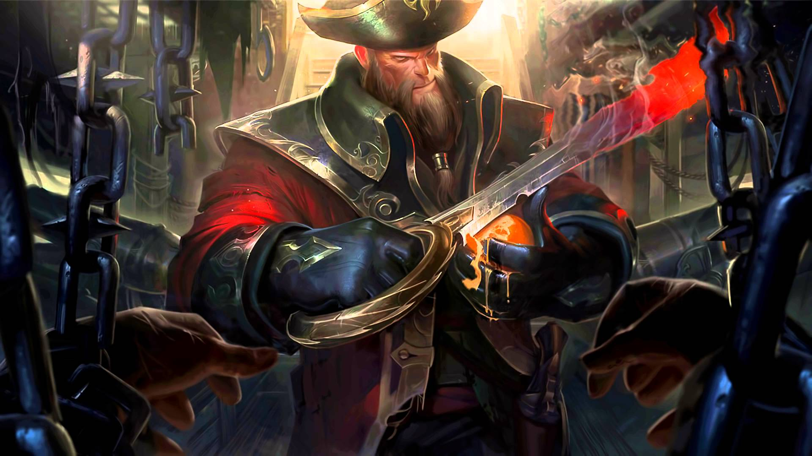

海洋之災 剛普朗克Gangplank
準備好了嗎?孩子們

英雄介紹
 海洋之災 剛普朗克
海洋之災 剛普朗克
故事
「小子，你還會尿褲子時，老子早就在砍人、搶船了！還是別跟我作對吧！」 殘忍、難以預測的剛普朗克，即使在權力浩劫後仍令人恐懼。不論到哪，他總伴隨著毀滅和死亡，即使只是遙遠的海上出現了剛普朗克的黑帆，都能讓最堅韌的水手驚恐萬分。
技能介紹
 烈火審判 （被動）
烈火審判 （被動）
每隔 15 秒，剛普朗克的下次普攻會燃燒目標，在 2.5 秒內造成共 30～200（+1.0 額外物理攻擊）點傷害，此傷害對防禦塔只有 50%。此外 ，剛普朗克增加 30% 跑速，持續 2 秒。 摧毀火藥桶（E）會立即刷新此效果。
 槍火談判 （Q）
槍火談判 （Q）
壞血症療法 （W）
剛普朗克吃下一串柑橘水果，解除所有控場技能效果，並回復 50/75/100/125/150（+0.9 魔法攻擊）（+15% 失去生命）點生命。
 火藥桶 （E）
火藥桶 （E）
被動：剛普朗克每隔 18/16/14/12/10 秒會獲得一個火藥桶，最多可以儲存 3 個。
主動：剛普朗克放置一個火藥桶，持續 60 秒或直到被摧毀。火藥桶剛放置時有 3 點生命，每 2/1/0.5 秒會自行減少 1 點，最低降至 1 點。火藥桶遭受剛普朗克自身或是敵方英雄攻擊時，也會減少 1 點生命。 敵方英雄摧毀火藥桶可以獲得 10 金錢。
若火藥桶由剛普朗克自行摧毀則會爆炸，將摧毀火藥桶的傷害轉為範圍物理傷害，並減少 40/50/60/70/80% 跑速，持續 2 秒。爆炸傷害無視目標 40% 物理防禦，且敵方英雄會多承受 60/90/120/150/180 點物理傷害。
爆炸可與鄰近的火藥桶產生連鎖效應，但每個敵人在連鎖爆炸中只會承受一次爆炸傷害。若由槍火談判（Q）引爆火藥桶，所擊殺的敵人同樣也會給予額外的金錢。
 加農砲幕 （R）
加農砲幕 （R）
剛普朗克召喚海盜船炮擊目標區域 8 秒，獲得該區域的視野，共發動 12 波攻擊。每波攻擊對範圍內的敵人造成 35/60/85（+0.1 魔法攻擊）點魔法傷害，並降低 30% 跑速，持續 0.5 秒。
剛普朗克可以用槍火談判（Q）賺來的毒蛇銀幣在商店升級此技能，每次升級需要花費 500 個毒蛇銀幣。